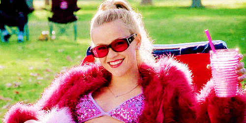
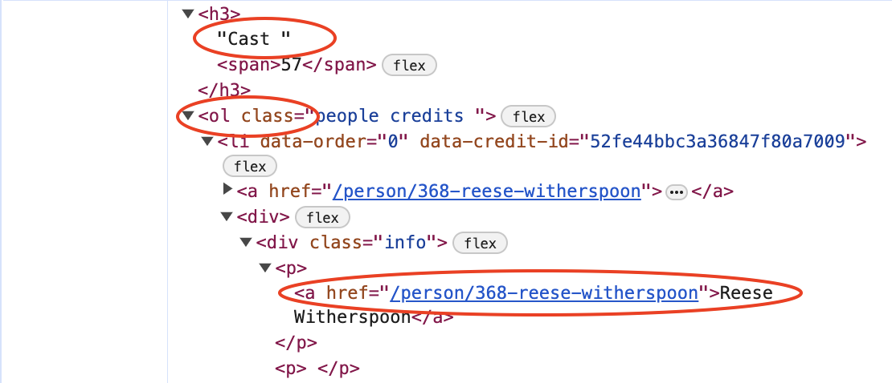
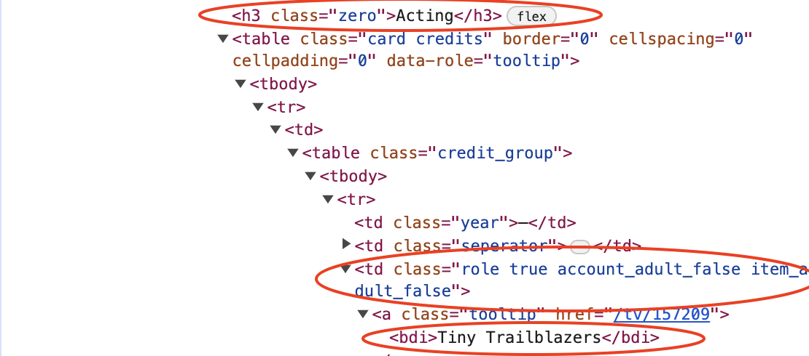
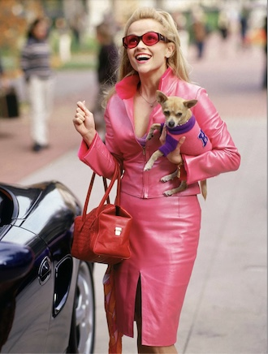
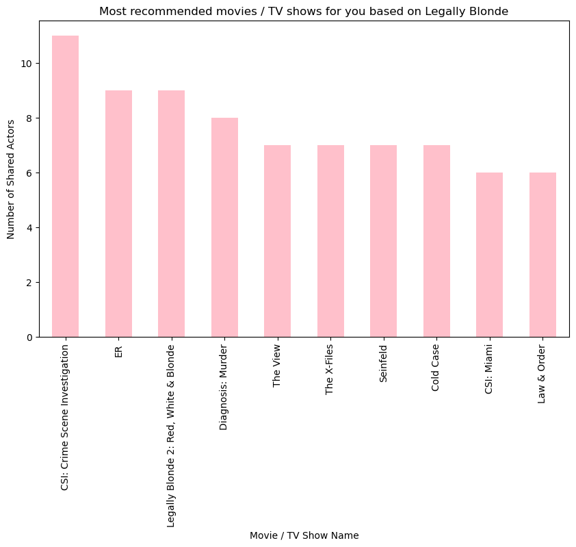

# import necessary packages
import scrapy
# define a class that inherits scrapy.Spider, the base class for spiders
class TmdbSpider(scrapy.Spider):
name = 'tmdb_spider' # name our spider
def __init__(self, subdir=None, *args, **kwargs):
"""
Class constructor for the TmdbSpider class.
Args:
self (TmdbSpider class instance): instance of the TmdbSpider class.
subdir (string): String for the subdirectory of the movie we want to start with. This string can be found in the movie url
*args: additional arbitrary keyword arguments
**kwargs: additional keyword arguments
"""
self.start_urls = [f"https://www.themoviedb.org/movie/{subdir}/"] # build the complete url from the subdirectory How to use Python and Scrapy to determine movies you will like based on Legally Blonde
Welcome! In today’s post, I will be describing how to build a webscraper to scrape the TMDB movie database. By the end of this post, you should understand how to build a webscraper, and you should be able to use this webscraper for the movie of your choice to find recommendations based on it. For my movie, I’m going to choose Legally Blonde.

What a girlboss!!
Part A: Building the webscraper
Part 0A: Initializer
Just like Elle Woods had to study hard for her LSAT before she got into Harvard, we all have to start somewhere. Before webscraping the TMDB website, we have to build our scraper. In this section, I will explain how to build the scraper and how the scraper works. Then, in part B, I will explain where this TmdbSpider class should go and how to actually set up the scraper in your local computer. So for now, just follow along with the explanation, and we will set everything up in Part B.
We begin this webscraper by importing the necessary packages, defining a class, and constructing the initializer.
We will name the class TmdbSpider since we are creating a webscraper for the TMDB database. It will inherit the class scrapy.Spider.
In the initializer, we will accept a “subdir” string argument. This argument is a string that contains the last part of the url the movie we want to scrape. It should look something like this:
“8835-legally-blonde”
This url ending can be found by looking at the url of the movie we want to scrape on the TMDB website.
Then, we will create an instance variable called start_urls that builds the complete url for the movie to scrape.
Part 1A: Parse Method
The first class method we will define is the parse() function. This is how the parse() function works:
- First, obtain the url of the full cast and crew. This will be done by “hardcoding”, aka, manually adding a “cast” string onto our start_urls instance variable.
- Call the parse_full_credits() method. This will be done by specifying a callback argument to a yielded scrapy request.
This method assumes we start on a movie page, and it should navigate us to a “full cast and crew” page for that specific movie. Then, it calls the next parse function, which we will define in part 2.
def parse(self, response):
"""
Assumptions:
Assume we are starting on a movie page.
Effects:
Navigate to a "full cast and crew" page for that specific movie.
Data outputs: A yielded scrapy request calling parse_full_credits() method with the harcoded "full cast and crew" url
"""
# first, obtain the url of full cast and crew (hardcoded)
# response.url is a built-in method that gives us current url of response
cast_url = response.url + '/cast/'
# parse_full_credits method is called by specifying callback argument to yielded scrapy request
yield scrapy.Request(url = cast_url, callback = self.parse_full_credits)Important:
Please note that each of the parse methods we are defining are all part of the TmdbSpider class!!!
Anyways…
What just happened in the last line? Well, in the “yield scrapy.Request” line, we first tell scrapy to fetch this url. After it fetches the “full cast and crew” url, we obtain the response object. This response object is automatically passed in as the second argument to the callback function, parse_full_credits. And, remember from PIC16A that “self” is always passed in as the first argument. This is why parse_full_credits function has no arguments specified.
parse_full_credits: 1. First argument: self (automatic) 2. Second argument: response object from cast_url (automatic)
What does the parse_full_credits() method do? Well, let’s define it now!
Part 2A: Parse full credits Method
The second class method we will define is parse_full_credits(). This function takes in two arguments: a reference to the current instance of the class “self”, and the response object generated from the previous parse method. It assumes we start on the “full cast and crew” wegpage for a specific movie. Here is how it works:
- Locate the “cast” table of the webpage.
- To do this, we will search for an h3 element containing “Cast” using Xpath.
- We must ensure we are only in the cast table, or else we might get non-actors in our list (aka, members from the production crew).
- Obtain the list of cast members.
- Select the first “ordered list” (ol) element that appears after the h3 element. We can do this using “following-sibling::ol[1]”.
- Note that the ordered list element is not a “child” of the h3 element, which is why we use the “following-sibling” expression.
- Obtain the actor urls.
- Using the xpath object of cast members, navigate into the list element that contains a div element with a class attribute containing “info”.
- Then, look for a <> tag after the div class. This <> tag may or may not be the direct descendent of the div element, which is why we use the “descendant-or-self” line.
- Finally, navigate into the <> tag and grab the url inside it. Use the “getall()” method to obtain all such links.
- Yield scrapy requests for each actor url, using the parse_actor_page method as a callback function.
Here is what the function should look like.
def parse_full_credits(self, response):
"""
Assumptions:
Assume we are starting on a "full cast and crew" page for one movie.
Effects:
Navigate to each actor's page for the specific movie (note - ACTOR - not any other crew member!)
Data outputs: A yielded scrapy request calling parse_actor_page() method for every single actor's link in this webpage.
"""
# Step 1: Locate cast table of webpage (h3 tag contains "Cast")
# Step 2: Create an xpath object from this "Cast" table, called table1
table1 = response.xpath('//h3[contains(., "Cast")]/following-sibling::ol[1]')
# Step 3: Obtain all the actor urls by finding the proper link for each actor
urls_actors = table1.xpath('.//li//div[contains(@class, "info")]/descendant-or-self::*/p/a/@href').getall()
# notice that we use getall() method to obtain ALL actor urls
# Step 4: Yield scrapy requests for each actor url
for link in urls_actors:
yield scrapy.Request(url = response.urljoin(link), callback = self.parse_actor_page)
# we use urljoin as opposed to simple string concatonation to ensure that relative urls are formed properly Here is what the HTML element looks like. In this HTML element, we are trying to obtain the second “a href=”/person/368-reese-witherspoon” text to get the link for the actor page. We specifically try to get the second one, and not the first one, because each actor has two links and we do not want more than one link per actor.

In our function, just like before, we do not put any arguments into the parse_actor_page() function because the second argument is automatically the response object fetched by the url we specified, and the first argument is automatically “self”. But what is the parse_actor_page() function? Let’s define it right now!
Part 3A: Parse actor page
The final class method we will define is the parse_actor_page() method. This function takes in two arguments, (1) a reference to the current instance of the class “self”, and (2) the response object generated from the previous class method we defined. It assumes we start on an actor’s webpage. It will yield a dictionary object for each actor and each movie they played in. Here is how it works:
- Get the actor’s name: It will be on the very top of the webpage in the <> title element.
- Locate the “acting” table in the actor’s webpage and create an xpath object from it called “table”.
- We do this by first finding the h3 element with text element “Acting”, and then we select the element that occurs directly after it.
- This is why we use the “following-sibling” code.
- Obtain each movie / tv show name from the acting “table”.
- This is done by navigating to the <> element within the acting “table”.
- Yield a key-pair value containing {actor_name, movie_or_TV_name} for every movie / tv show that the actor played in.
def parse_actor_page(self, response):
"""
Assumptions:
Assume we are starting on an actor's webpage.
Effects:
Does not navigate to any new webpages.
Data outputs: A yielded dictionary, each key-value pair containing the movie that an actor acted in along with the actor's name.
"""
# Step 1: obtain the actor's name from the Title of the webpage
actor_name = response.css('h2.title > a::text').get()
# Step 2: Locate the acting table in the webpage, and select the element that occurs immediately after it
table = response.xpath('//h3[text()="Acting"]/following-sibling::table[1]')
# Step 3: Obtain the relevant movie / tv show names from each acting "table"
movie_names = table.css('td.role.true.account_adult_false.item_adult_false > a.tooltip > bdi::text').getall()
# notice that we use "getall()" method to obtain ALL movie / tv show names
# Yield a key-value pair for each movie / tv show in this actor's webpage
for movie_or_TV_name in movie_names:
yield {"actor": actor_name, "movie_or_TV_name": movie_or_TV_name} Here is what the HTML element looks like. In this HTML element, we are trying to obtain the text within the <> element because that gives us the movie / tv show name.

Part B: Project: Finding Recommendations based on Legally Blonde
Part 0B: Setting up scraper
Now that we know how to build our TMDB Spider, let’s actually set it up and use it to find recommendations based on Legally Blonde. The first step is to set up your local machine for webscraping. Here are the first few steps:
In your terminal, 1. Activate the Python environment of your choice 2. Navigate into the directory where you want your scraper files to be
3. Run the following lines in your terminal:
scrapy startproject TMDB_scraper cd TMDB_scraper
This will create a lot of folders and files. Do not worry about these. Here are the next steps: 1. Inside your spider directory, add a file called “tmdb_spider.py”. Inside this file, write out the tmdbSpider class we just defined. 2. In your settings.py file, add this line: “USER_AGENT = ‘Mozilla/5.0 (Windows NT 10.0; Win64; x64; rv:91.0) Gecko/20100101 Firefox/91.0’”. This will ensure we do not run into any 403 errors.
Part 1B: Running the scraper
Now, we will run our scraper for Legally Blonde. The TMDB link for Legally Blonde is:
https://www.themoviedb.org/movie/8835-legally-blonde
So, our “subdir” argument should be 8835-legally-blonde. Navigate into the directory where you want your results file to be, and run the following line in your terminal:
scrapy crawl tmdb_spider -o results.csv -a subdir=8835-legally-blonde
This line will webscrape the Legally Blonde database using the tmdb spider class we just defined. The “subdir” argument is passed into the very first “parse” method, and the webscraper navigates to the appropriate webpages from there.
Part 2B: Accessing and analyzing results.csv file
After running this line in your terminal, wait till you see a message that the Spider has closed in your terminal. Then, in the folder that you are currently in, there should be a file called “results.csv”. This should contain two columns: 1. Actor name 2. Movie name
Now, let’s analyze these results to build a recommender system.
First, let’s import this results.csv file and turn it into a pandas dataframe for easy analysis.
# import pandas
import pandas as pd
# import results csv file as dataframe
results = pd.read_csv("results.csv")
# preview results dataframe
results.head()| actor | movie_or_TV_name | |
|---|---|---|
| 0 | Reese Witherspoon | Tiny Trailblazers |
| 1 | Reese Witherspoon | Tracy Flick Can't Win |
| 2 | Reese Witherspoon | Great Performers: 9 Kisses |
| 3 | Reese Witherspoon | You’re Cordially Invited |
| 4 | Reese Witherspoon | Legally Blonde 3 |
Great! Let’s see how many actors were in the original “Legally Blonde” movie, and how many total actors and movie / TV show names there are.
actors_in_legally_blonde = results[results['movie_or_TV_name'] == 'Legally Blonde']['actor'].unique()
movies_total = results['movie_or_TV_name'].unique()
print("All the actors in Legally Blonde: \n", actors_in_legally_blonde, "\n")
print("All the movies that are in the results file: \n", movies_total, "\n")
print("Number of movies / TV shows in the results file: \n", results['movie_or_TV_name'].nunique())All the actors in Legally Blonde:
['Reese Witherspoon' 'Lily' 'Kelly Driscoll' 'Sasha Barrese' 'Moonie'
'Kennedy Stone' 'Elizabeth Matthews' 'Richard Hillman' 'John Kapelos'
'Patricia Kimes' 'Jodi Harris' 'Nectar Rose' 'Terence Michael'
'John Cantwell' 'Ondrea de Vincentis' 'Chaney Kley' 'Melissa Anne Young'
'Brody Hutzler' 'Lacey Beeman' 'Jason Christopher' 'Lisa K. Wyatt'
'Corinne Reilly' 'Doug Spinuzza' 'Niklaus Lange' 'Victoria Mahoney'
'Tane McClure' 'David Moreland' 'Allyce Beasley' 'Kevin Cooney'
'Cici Lau' 'Natalie Barish' 'Lisa Arch' 'Francesca P. Roberts'
'Kimberly McCullough' "Shannon O'Hurley" 'Ted Rooney' 'Kelly Nyks'
'Samantha Lemole' 'Michael B. Silver' 'Ted Kairys' 'Bruce Thomas'
'Meredith Scott Lynn' 'Linda Cardellini' 'Raquel Welch' 'Greg Serano'
'Osgood Perkins' 'Wayne Federman' 'Jessica Cauffiel' 'Alanna Ubach'
'Victor Garber' 'James Read' 'Jennifer Coolidge' 'Holland Taylor'
'Matthew Davis' 'Selma Blair' 'Luke Wilson' 'Ali Larter']
All the movies that are in the results file:
['Tiny Trailblazers' "Tracy Flick Can't Win" 'Great Performers: 9 Kisses'
... 'Giving It Up' 'Varsity Blues' 'Just Shoot Me!']
Number of movies / TV shows in the results file:
1775Part 3B: Building our recommender system
There are 1775 movies/TV shows to choose from! How do we know which one we will like best? One way to do this is to see which movies / TV shows have the highest number of shared actors with Legally Blonde. Then, we can create a visualization with the top 10 movies / TV shows and the number of shared actors they contain.
Let’s make this visualization pink, Elle Woods’ favorite color!!

# import matplotlib
import matplotlib.pyplot as plt
# create a new dataframe for shared actors
same_actors = results[results['actor'].isin(actors_in_legally_blonde) & (results['movie_or_TV_name'] != 'Legally Blonde')]
# find out how many shared actors per movie
same_actors_value = same_actors['movie_or_TV_name'].value_counts()
# create a new dataframe with top 10 movies / TV shows
top_movie_TV_show = same_actors_value.nlargest(10)
# plot bar chart accordingly
plt.figure(figsize=(10, 6))
# make sure the color is pink!
top_movie_TV_show.plot(kind='bar', color='pink')
plt.title('Most recommended movies / TV shows for you based on Legally Blonde')
plt.xlabel('Movie / TV Show Name')
plt.ylabel('Number of Shared Actors')
plt.show()
Part 4B: Summary and takeaways
Wow! Now we have a visualization for a recommender system based on Legally Blonde. I am shocked there are so many true crime shows on there! I guess Reese Witherspoon really stuck to the “Legal” movie genre. Good for her! She’s such a slay girlboss queen.
Something else that is pretty cool about this visualization is that it not only shows you which movies and TV shows are recommended for you, but at which level they are recommended for you based on the number of actors.
Note that you can do this for any movie of your choice using the scraper we built!